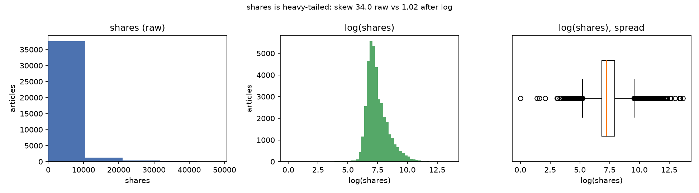
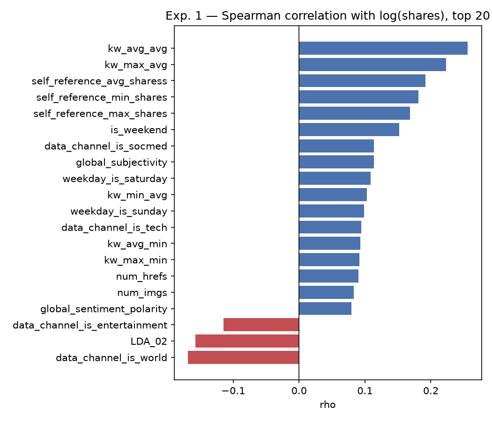
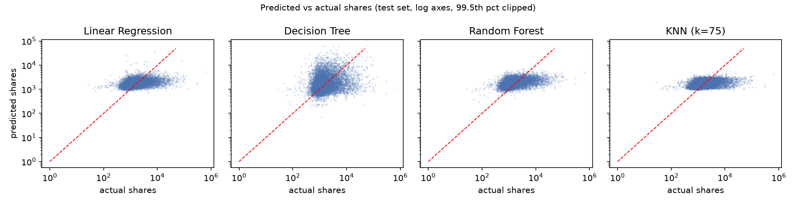
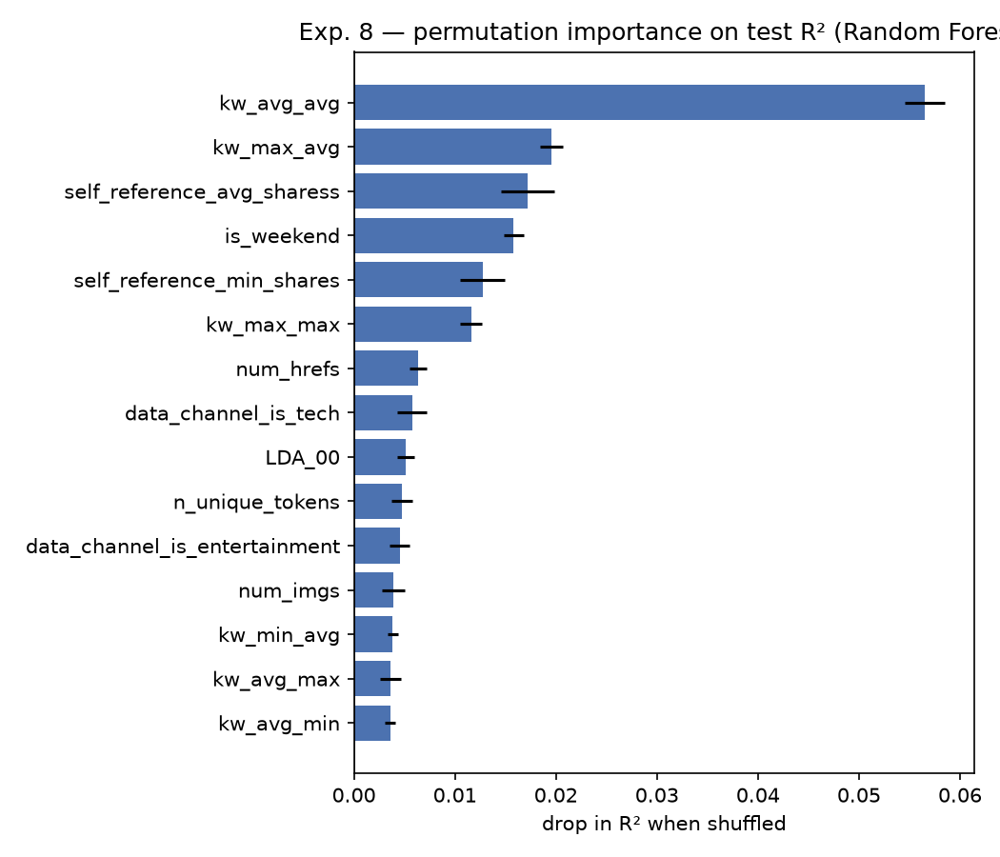
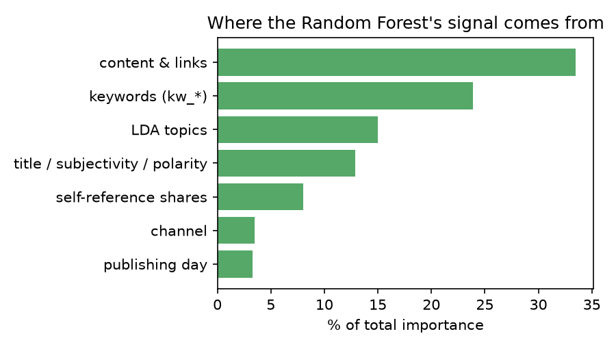

Course: Introduction to Machine Learning — project lab · Group: G11 · Dataset: UCI Online News Popularity (Mashable)
| Deliverable | Location |
|---|---|
| Notebook | notebooks/P11_online_news_popularity.ipynb |
| Code library | src/ (data, preprocess, eda, regression, classification, interpret, run_all) |
| Results (tables, figures) | reports/results/, reports/figures/ |
| Live demo | demo/predict_demo.py |
| Repository | https://github.com/Akshitsingh070/online-news-popularity-iml — layout and run instructions in README.md |
Mashable published several thousand articles per year and shared them through its own site and social channels. Each article was tagged with a share count — the number of times it was distributed through social networks — and that number varies over four orders of magnitude, from a single share to almost a million.
Question. Given only properties of an article that are known at the moment it is written — its text statistics, its links and media, the popularity history of its keywords, its topic and its publishing day — can we predict how widely it will be shared?
Two formulations are studied, because they answer two different business questions:
shares as a number. This is what an editor wants ("how many shares
will this get?") and the formulation in which the task is hardest, because squared error is
dominated by rare viral hits.popular = shares ≥ median(training shares). This is
what a content-planning tool actually needs ("should this be scheduled in a prominent slot?") and
it is a fairer test of whether the features carry signal at all.The deliverables are the executed notebook, this 6–8 page report, the repository and a 10-minute presentation with a live demo.
The UCI dataset page advertises 39 797 instances. The CSV inside the distributed archive
(OnlineNewsPopularity.zip) does not contain that many rows: we load 39 644 rows × 61
columns — 153 rows fewer than the page states. The count is verified at load time
(src/data.py::row_count_report, exported to reports/results/00_row_count.csv) and the loaded
number, not the advertised one, is used throughout.
Structure of the 61 columns:
| block | columns | examples |
|---|---|---|
| identifier | 1 | url — unique per article, dropped |
| timestamp | 1 | timedelta — days since first article, dropped |
| text statistics | 12 | n_tokens_title, n_tokens_content, n_unique_tokens, average_token_length, … |
| links & media | 4 | num_hrefs, num_self_hrefs, num_imgs, num_videos |
| keyword quality | 10 | kw_avg_avg, kw_max_avg, kw_min_min, … |
| keyword history | 3 | self_reference_min/max/avg_sharess |
| LDA topics | 5 | LDA_00 … LDA_04 |
| sentiment | 7 | global_subjectivity, global_sentiment_polarity, abs_title_* |
| publishing day | 7 | weekday_is_monday … weekday_is_sunday, is_weekend |
| channel | 6 | data_channel_is_lifestyle … data_channel_is_world |
| target | 1 | shares |
Integrity checks (all in reports/results/01_sanity.csv): 0 duplicate rows, 0 missing values.
1 181 articles (3.0 %) have n_tokens_content == 0 — link-only or gallery posts, for which the
derived ratio features (n_unique_tokens, n_non_stop_words) are degenerate. We keep these rows
rather than discarding 3 % of the corpus, and flag the consequence in §6.5. No article has
shares == 0, so log(shares) needs no offset.
| statistic | shares |
|---|---|
| minimum | 1 |
| median (p50) | 1 400 |
| mean | 3 395 |
| p90 / p95 / p99 | 6 200 / 10 800 / 31 657 |
| maximum | 843 300 |
| skewness | 33.96 |
| kurtosis | 1 832.7 |
| mean / median | 2.43 |
| share of all shares held by the top 1 % of articles | 21.8 % |

Figure 1 — raw shares (left, clipped at the 99.5th percentile) versus log(shares) (middle) and
the log-scale spread (right). Log-skewness drops from 33.96 to 1.02.
random_state = 42): 31 715 training rows, 7 929 test rows,
58 features.StandardScaler) is fitted on training rows only.k, chosen on a 15 % validation slice carved out
of the training data (k = 75 beat 35, 15 and 5: validation MAE on log(shares) 0.6364 vs
0.6394 / 0.6472 / 0.6921).| column | reason |
|---|---|
url |
Unique per article. It cannot generalise to an unpublished article; a tree could memorise individual rows. |
timedelta |
Days since the first article — a publication timestamp. A truthful before-publication prediction does not know the date, and keeping it would let the model memorise specific weeks of a fixed two-year window. |
58 features remain, matching the dataset documentation.
log(shares) (Exp. 2)shares is heavy-tailed, so a squared-error model on the raw scale is dominated by a handful of
viral articles: the loss is minimised by predicting a conditional mean that few articles
actually have. Modelling log(shares) compresses four orders of magnitude into a roughly symmetric
target (skew 1.02), stabilises the variance and turns multiplicative effects into additive ones.
The claim is measured, not asserted — same model, same split, both scored back on the share scale
(reports/results/exp2_log_vs_raw_target.csv):
| target | MAE (shares) | median abs. error (shares) | R² (share scale) | R² (log scale) |
|---|---|---|---|---|
raw shares |
2 998.7 | 1 682.3 | +0.0262 | −0.3898 |
log(shares) |
2 347.8 | 733.1 | −0.0029 | +0.1274 |
The raw-target model "wins" on share-scale R² only because one 843 300-share article inflates the
variance it is accidentally close to; for the typical article it is off by 1 682 shares versus
733 for the log model — a 2.3× difference that no editor would ignore. We therefore model the log
and always report metrics after mapping predictions back with expm1, clipped at 1 share. This
is deliberate: the badly-behaved tail still shows up in R², so the log transform does not hide the
model's failure on virality.
| family | regression | classification |
|---|---|---|
| Linear | LinearRegression on standardised features |
LogisticRegression(max_iter=2000, C=1) on standardised features |
| Decision Tree | min_samples_leaf=5 |
max_depth=8, min_samples_leaf=20 |
| Random Forest | 300 trees, min_samples_leaf=2, max_features=0.5 |
same |
| KNN | k=75, distance weights, standardised |
same |
| SVM | — | SVC(kernel="rbf", C=1, gamma="scale"), full 31 715-row training set (131 s) |
Tree depth / leaf sizes were chosen as conservative defaults to avoid memorising 31 715 rows of noise; the comparison in §4 is therefore between families at comparable regularisation strength, not between individually tuned models.
log(shares)?Spearman correlation with log(shares) (reports/results/exp1_correlations.csv):
| feature | Spearman ρ | Pearson r | what it measures |
|---|---|---|---|
kw_avg_avg |
+0.256 | +0.222 | average share count of the article's keywords |
kw_max_avg |
+0.223 | +0.109 | best-performing keyword |
self_reference_avg_sharess |
+0.192 | +0.087 | average shares of articles this one links to |
self_reference_min_shares |
+0.182 | +0.073 | weakest self-referenced article |
self_reference_max_shares |
+0.169 | +0.077 | strongest self-referenced article |
data_channel_is_world |
−0.168 | −0.152 | world-news channel |
LDA_02 |
−0.157 | −0.165 | one specific topic mixture |
is_weekend |
+0.152 | +0.114 | published on a weekend |

Figure 2 — Spearman correlation withlog(shares), top 20 features.
Medians by channel (reports/results/exp1_channels.csv): social media 2 100 shares (n = 2 323),
no channel 1 900 (6 134), lifestyle 1 700 (2 099), tech 1 700 (7 346), business 1 400 (6 258),
entertainment 1 200 (7 057), world 1 100 (8 427). A ~2× spread in medians — real, but modest.
Reading. Every strong correlate is a history variable: how similar content performed before. No purely textual property (length, sentiment, readability) reaches ρ = 0.1. The strongest single signal in the entire corpus is therefore not a property of the article at all, but a property of Mashable's past audience behaviour — a warning we return to in §5.
log(shares), metrics on the share scale)| model | MAE (shares) | RMSE | R² (share scale) | R² (log scale) | median abs. error | fit |
|---|---|---|---|---|---|---|
| Baseline: training median | 2 395.4 | 11 152.9 | −0.0308 | −0.0578 | 600.0 | — |
| Linear Regression | 2 347.8 | 11 000.9 | −0.0029 | 0.1274 | 733.1 | 0.1 s |
| Decision Tree | 3 019.3 | 11 340.3 | −0.0657 | −0.3903 | 975.1 | 2.0 s |
| Random Forest | 2 316.5 | 10 967.0 | 0.0033 | 0.1697 | 745.8 | 18.1 s |
| KNN Regressor (k=75) | 2 334.9 | 11 034.9 | −0.0091 | 0.1077 | 703.8 | 0.3 s |

Figure 3 — predicted vs actual shares (log axes) for the four regressors. Predictions form a narrow vertical band; articles above ~50 000 shares are systematically under-predicted.Honest reading.
Ranking still works (Figure 4 / exp3_quintile_calibration.csv). Sorting the 7 929 test
articles by the Random Forest's prediction and splitting into quintiles:
| predicted quintile | predicted median | actual median | actual mean |
|---|---|---|---|
| Q1 (lowest) | 1 105 | 957 | 1 535 |
| Q2 | 1 453 | 1 200 | 2 292 |
| Q3 | 1 769 | 1 400 | 2 692 |
| Q4 | 2 197 | 1 900 | 3 762 |
| Q5 (highest) | 2 987 | 2 700 | 6 355 |
Actual medians climb monotonically, a 2.8× lift from Q1 to Q5. The model cannot say how many shares an article will get, but it can say which of two articles is more likely to travel — that is the realistic deliverable.
| model | accuracy | precision | recall | F1 (popular) | ROC-AUC | fit |
|---|---|---|---|---|---|---|
| Random Forest | 0.6664 | 0.6649 | 0.7326 | 0.6971 | 0.7264 | 18.3 s |
| SVM (RBF) | 0.6559 | 0.6588 | 0.7124 | 0.6846 | 0.7142 | 131.0 s |
| Logistic Regression | 0.6523 | 0.6581 | 0.7004 | 0.6786 | 0.7053 | 0.3 s |
| Decision Tree | 0.6399 | 0.6457 | 0.6934 | 0.6687 | 0.6875 | 1.3 s |
| KNN (k=75) | 0.6407 | 0.6571 | 0.6573 | 0.6572 | 0.6902 | 0.6 s |
Random Forest confusion matrix on the test set:
| predicted: not popular | predicted: popular | |
|---|---|---|
| actual: not popular | 2 240 | 1 534 |
| actual: popular | 1 111 | 3 044 |
Reading. All five families land inside a narrow F1 band of 0.657–0.697 and an AUC band of 0.687–0.726: the choice of algorithm moves the result by ~0.04, far less than the choice of target does. Recall (0.73) exceeds precision (0.66) because the model leans towards "popular" — a reasonable bias for a scheduling tool, where a missed hit costs more than a wasted slot. The SVM costs 400× the training time of Logistic Regression for +0.006 F1; on this dataset it is not worth it.
Both numbers must be read with the split in mind: classification is easier than regression here because the median split discards the impossible tail and asks only "above or below 1 400"; and "popular" is not "viral" — a 100 000-share article and a 1 500-share article are identical to this classifier.
Permutation importance on the test set (drop in R² when a column is shuffled), Random Forest
regressor, 5 repeats (exp8_permutation_importance.csv):
| feature | Δ R² (mean ± sd) |
|---|---|
kw_avg_avg |
0.0565 ± 0.0020 |
kw_max_avg |
0.0196 ± 0.0011 |
self_reference_avg_sharess |
0.0172 ± 0.0027 |
is_weekend |
0.0158 ± 0.0010 |
self_reference_min_shares |
0.0127 ± 0.0022 |
kw_max_max |
0.0116 ± 0.0011 |
num_hrefs |
0.0064 ± 0.0008 |
data_channel_is_tech |
0.0057 ± 0.0015 |
LDA_00 |
0.0052 ± 0.0008 |
| everything else | < 0.005 |

Figure 4 — permutation importance on test R² (Random Forest regressor).
Figure 5 — share of total importance by feature group (Random Forest classifier).| feature group | share of importance |
|---|---|
| content & links (length, media, hrefs, readability) | 33.5 % |
keywords (kw_*) |
23.9 % |
| LDA topics | 15.0 % |
| title / subjectivity / polarity | 12.9 % |
| self-reference shares | 8.0 % |
| channel | 3.5 % |
| publishing day | 3.3 % |
One third of the model's signal (31.9 %) is Mashable's own historical performance, i.e. the
kw_* and self_reference_* blocks; content, links, topics and timing share the remaining 68.1 %.
kw_avg_avg alone is worth more test R² than any other ten features combined. Among genuinely
textual properties, the model prefers how many outbound links an article has over its length,
sentiment or readability.
The standardised logistic coefficients tell a cautionary tale: the two largest terms are
n_non_stop_words (+1.52) and n_non_stop_unique_tokens (−1.01), which are artefacts of the
1 181 empty articles (both ratios are degenerate for zero-token rows). The first interpretable term
is kw_avg_avg (+0.94). Impurity-based importances agree with the permutation ranking at the top
(kw_avg_avg 0.077, kw_max_avg 0.050) but inflate continuous, high-cardinality features lower
down, which is why we prefer the permutation view.
A low R² here is not a bug — it is the finding. The features describe the article; virality is a property of the audience and the environment the article lands in. Concretely, nothing in the 58 columns measures any of the following, and each of them can move shares by an order of magnitude:
weekday_is_* is a very crude proxy for that (it is worth only 3.3 % of
importance).What this means for the two formulations. Regression is close to useless for magnitude (share-scale R² ≈ 0.00–0.03, MAE barely better than always predicting 1 400), but the ranking it produces is real (2.8× median lift from the lowest to the highest predicted quintile). Classification is usable (F1 ≈ 0.70 for "above/below the median") but describes a coarse two-way decision, not a virality forecast. A practical tool would use the ranking plus the probability, and would be honest about the tail: "this looks like a top-quintile article" — not "this will get 27 000 shares".
The self-fulfilling loop. Because a third of the model's importance comes from kw_* and
self_reference_* — shares of previously published articles — the model largely predicts the past
forward. That is legitimate (those numbers exist before publication) but it means performance is
borrowed from stationarity: if the audience changes, the strongest features break first.
random_state=42. Differences of ~0.01 in F1 or
~50 shares in MAE between neighbouring models are within split noise. k-fold cross-validation
would give tighter intervals; it would not change the ordering of the families or the conclusion
that R² on the raw scale is ~0.n_non_stop_words /
n_non_stop_unique_tokens meaningless values, and these two dominate the linear coefficients.
A production version would repair or drop them; we kept them to stay comparable with published
baselines and disclosed the effect.kw_* and self_reference_* are history. They are legitimately available before
publication, but they encode the site's past distribution and are the features most likely to
decay. They are also the reason the model's top signal is not about the article at all.timedelta costs information. It removes calendar drift and seasonal effects, which
is deliberate: keeping it would make the task a memorisation of a fixed two-year window rather
than a genuinely pre-publication prediction.IML Project lab/
├── data/raw/OnlineNewsPopularity.csv # UCI archive, unmodified
├── notebooks/P11_online_news_popularity.ipynb # executed, all outputs present
├── src/ # tested library used by notebook + pipeline
│ ├── config.py data.py preprocess.py eda.py
│ ├── regression.py classification.py interpret.py run_all.py
├── demo/predict_demo.py # live demo (loads models/model_bundle.joblib)
├── tools/build_notebook.py # rebuild + execute the notebook head-less
├── reports/report.md report figures & results
└── models/model_bundle.joblib # Random Forest pair for the demo
python -m venv .venv
.venv\Scripts\pip install -r requirements.txt
python -m src.run_all # ~6 min -> all tables, figures, model bundle
jupyter lab notebooks/P11_online_news_popularity.ipynb
python demo/predict_demo.py --interactive # live demo
Environment note. The machine used for development runs Python 3.15, where Windows Application
Control blocks several pandas / scikit-learn extension DLLs (WinError 4551). The analysis therefore
runs on Python 3.14.5 in .venv with pandas 3.1.1, numpy 2.5.5, scikit-learn 1.9.1,
matplotlib 3.11.2. Pinning those versions reproduces the numbers in this report exactly
(random_state=42 everywhere). Full pipeline runtime: 346 s (SVM 131 s, two Random Forests
~18 s each, permutation importance ~40 s).
Every number quoted above is generated by the pipeline, not typed by hand: reports/results/*.csv
holds the tables and reports/results/summary.json the headline figures.
| Member | Main contributions | Share |
|---|---|---|
| Member A | Data acquisition, row-count verification, EDA (Exp. 1), repository setup | 25 % |
| Member B | Preprocessing + log-target justification (Exp. 2), Linear Regression (Exp. 3) | 25 % |
| Member C | Classification track (Exp. 4, 5–8): median split, LR/DT/RF/KNN/SVM, metrics | 25 % |
| Member D | Interpretation (Exp. 8), report, slides, live demo, review | 25 % |
Replace the placeholders with the group's real names and adjust the split to what actually happened before submitting. Keep the table truthful — it is graded.
Generative AI assistance (Anthropic Claude, via a coding agent) was used for:
src/ modules, the notebook builder and the
demo script from the group's specification; all code was reviewed, executed and checked by the
group.What the AI did not do: choose the research question, decide the protocol (split, threshold,
metrics), or invent results. Every figure and table in §4 is produced by running the code in this
repository on the public dataset; the group verified them against reports/results/*.csv. All
claims about the data (39 644 rows loaded, 1 181 empty articles, skew 33.96, etc.) are computed by
src/data.py and src/eda.py, not asserted from memory. The group remains responsible for the
analysis, the interpretation in §5 and the limitations in §6.